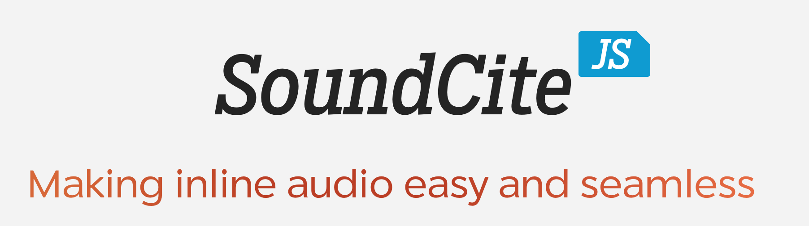
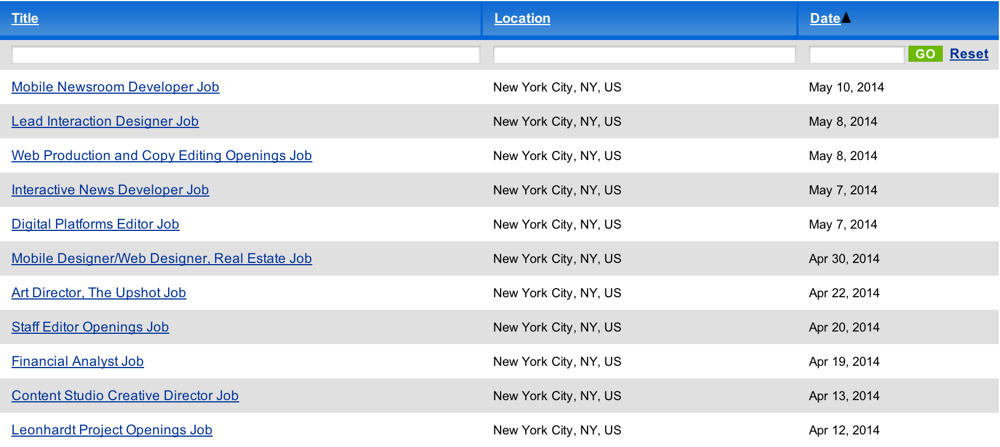

Learn to code
Join the future of journalism
by Tyler Fisher / @tylrfishr
tylerjfisher.com/201-2
Hello! My name is Tyler Fisher, and I’m a senior here at Medill. I’ve been asked to talk to you to share some of the things I’ve learned about the web and about programming during my time here at Northwestern.
Hello!
I hope I can inspire you to want to learn to code and make journalism on the web better. We’ll talk about the path I took here at Medill, and I’ll provide some resources and general advice for you going forward.
My path
I don’t want to talk too much about myself, but here’s some of the highlights of the things I’ve done in the past few years.
I wrote my first lines of code freshman year.
It was terrible.
I came into Northwestern wanting to be a music critic. In fact, I was originally a dual-degree student in music and journalism.
Nevertheless, I started programming freshman year as a part of North by Northwestern’s interactive team. At the time, we were learning how to make Flash graphics every Sunday afternoon.
My first project was absolutely, utterly horrific. [show the project] It’s a miracle that it still works today. But I was damn proud of it at the time. Despite its terrible design and functionality, the act of seeing something I built from scratch go live on a website was exhilarating.
Pressure to perform made me take coding seriously.
By the end of freshman year, all the other members of the interactive team had graduated or stopped participating, so I was left in charge of the section. I still had no idea, really, how to code. But the pressure of having to teach other people how to code in weekly meetings made me learn. I stayed one step ahead of my producers through online tutorials and late-night experimenting.
Pressure points
NBN Interactive Editor
Team-oriented class projects
Getting paid to program
I also found the necessary pressure through taking some classes at Northwestern that put me on a team that had to develop a product by the end of the quarter. The pressure of being responsible for not only your own grade, but also your peers’ grades, is certainly one that can make you stay up all night hacking away on a project.
Once I got good enough, I managed to get some internships and fellowships that actually paid me to code. So now, I really had to perform. Somebody paid me real money to produce working products.
Oh, the places you'll go!
Summer 2012: Chicago Tribune
Summer 2013: Gannett Digital
JR: NPR Visuals Team
Knight Lab Undergraduate Fellow
AP/Google Journalism and Technology Scholar
After graduation: NPR Visuals Team
In case you’re wondering, these are the places that have hired me to intern from them. If you had told me freshman year that I would have been hired by NPR out of college, I would have assumed something really, really bad happened to NPR. Like the federal government declaring martial law and taking over all radio bandwidth.
In addition to these internships, I have spent the last two years as a fellow at the Knight Lab, I received the AP-Google Journalism and Technology Scholarship for this academic year and I am currently the webmaster for North by Northwestern, where it all began.
And trust me, this isn’t due to any kind of prodigal skill I have. Journalism is desperate for programmers. If you acquire just a little bit of skill, the opportunities will come knocking down your door.
Some things I've made
During all of these opportunities, I’ve built some things I’m really proud of.

SoundCite was a project I developed for the Knight Lab during my junior year. The idea came from a class I took spring quarter sophomore year, where my professor asked us to “design the future of news.” It was a lofty prompt, and I had no idea how to do something that grandiose.
Instead, I thought about what had frustrated me as a music writer. Often times, the hardest thing about writing about music is writing about music. By which I mean, putting sound into words is hard. So I wanted a way to let readers hear particular snippets of music I was talking about.
[Demonstrate SoundCite]
Last spring, I formed a team of other developer-journalists and built out North by Northwestern’s housing guide as a full news application. Some of you may have used it.
[Demonstrate Housing Guide]
This is my most recent project and my last with the NPR Visuals Team while I was on JR. It’s essentially a slideshow, but I think we paid great attention to the user experience and how this particular story should be told.
[Demonstrate Wolves]
Why bother?
These are just some of the many things I’ve made and had the opportunity to participate in. But some of you may be thinking that coding is not for you. You’re going to be a writer. You’re going to be a broadcast reporter. You’re going to be a photographer.
I could try to convince you myself, but I decided to build something that would do it better than I ever could myself. Last week, I created a simple Tumblr that allowed anyone to submit short reasons why journalists should learn to code. I got a bunch of great responses, and here are a select few.
[read slides 14-18]
Learning to code means being able to build your vision instead of hoping someone else does.
— Matt Waite, professor of journalism, University of Nebraska-Lincoln
Journalists should learn more about code. Understanding our medium makes us better storytellers.
— Miranda Mulligan, Director, Knight Lab
If you don’t know how to write software to help you acquire and analyze data, there will always be a limit to the size of stories you can get by yourself.
— Scott Klein, Senior Editor, ProPublica
[Coding] makes my workday much more efficient by eliminating repetitive tasks — or helping other people eliminate their repetitive tasks — so that they have more time to report, edit, write, and integrate social media into their workday.
— Melody Kramer, digital strategist, NPR
Because writing good code and cool apps is fun. But doing so with content that matters makes a difference to your community, no matter how big or small.
— Gina Boysun, news apps editor, Spokesman-Review
Reimagining the way we explain the news means reinventing newsroom technology.
— Ezra Klein, editor-in-chief, Vox.com

More than half of the job openings at the New York Times require knowledge of programming.
I don’t particularly like the argument that you should code because you’ll get a job. I would hope that you could find more powerful motivations. But still, the numbers are striking. About a week ago, over half of the open editorial jobs at the New York Times required programming.
The most visited story for the New York Times in all of 2013 was a news application published on December 21st.
And it’s not hard to see why. Last year, the most visited story for the entire publication was a news application made by a statistician and a graphics editor, both of whom have considerable skill programming and designing for the web.
Note the publication date on that. It took less than two weeks for a news app to beat literally every other story on the New York Times for the entirety of 2013. News organizations are embracing the web in a way that we’ve never seen before.
What does it mean to "embrace" the web?
So what does it mean, exactly, to embrace the web? I’d like to present an argument that a lot of people make.
All journalists must know how to code.
Discuss.
Nah. Probably not.
All journalists **must** learn to code. I’d like to hear what you think of that.
[take a few answers, pivot discussion]
I don’t think that all journalists must learn to code. But I think it also depends on your definition of code.
The two literacies: digital and data
I think all journalists need two forms of literacy: digital literacy and data literacy. Let me explain what each of those things mean.
Digital literacy
Mozilla has a great standard .
Digital literacy essentially means understanding how the web works and knowing how to produce content of and for the web. Mozilla (those are the people who make Firefox) has a really great specification for digital literacy that I’ll walk you through.
The specification divides literacy into three broad categories: Exploring, Building, and Connecting.
Exploring
Navigate and search effectively for credible content.
Exploring covers a few things. First, you need to know how to navigate and search effectively for credible content. That means when you’re doing research for a story or even just tweeting an article you read, you have to be able to detect misinformation the web, because there is a *lot* of it.
Exploring
Know how to keep your personal information safe.
You need to know how to keep your personal information safe. Don’t share passwords and use secure passwords. Know what information is appropriate to send and receive from a source through electronic means.
Exploring
Understand how URLs and IP addresses work.
Finally, understand how URLs and IP addresses work. If you Google Facebook and then click the link on the Google search results, you’re doing it wrong.
If the terminology scares you, URLs are just the web addresses you type to go to a page, like google.com or northwestern.edu. However, the real “addresses” for those websites are IP addresses, which are sequences of numbers, like a phone number, that you don’t need to remember because URLs are easier.
Building
Understand how a good web page is structured.
The next category is building. This is as close to code as digital literacy gets. The first goal of building is to understand how a good web page is structured. That deals with understanding best practices for HTML.
Building
Be able to put text and multimedia onto a web page.
Next, be able to put text and multimedia onto a web page. This is a crucial skill for journalists. It goes beyond knowing how to use WordPress’s post editor. You should know how to put text and multimedia onto a web page using just HTML. It’s easy; trust me.
Building
Comprehend the logic of code and know what is possible.
Next, be able to comprehend the logic of code. Even if you’re not a master programmer, you should know what is possible and how the basic building blocks of programming work. At the most basic level, programming is just giving a computer instructions based on certain conditions. If I click on a button, take me to this web page.
Building
Understand the full stack of the web, from server to client.
Finally, understand the full stack of the web, from server to client. What’s a server and a client?
Whoa, stop right there. That sounds hard.
Well, that’s pretty hard. This is definitely the most difficult part, for me, of justifying all journalists becoming digitally literate. But here’s a very, very brief intro.
Client
A computer which makes requests.
A client is a computer that makes requests. Your laptop, your phone, anything you use to access the Internet. That’s a client.
Server
A computer which responds to requests.
A server is a computer that responds to requests. They give you the websites you request.
The internet physically connects servers and clients.
Here are way more slides explaining that than I have time for.
The Internet physically connects servers and clients. That's a very, very complex thing. Jeremy Bowers, who I work with at NPR, has about 180 slides of really great explanations for this stuff. I encourage you to check it out.
Back to the literacy thing.
Anyway, back to the digital literacy thing.
Connecting
Effectively share content and interact with your audience.
The third component of digital literacy is connecting. This is how you interact with others on the internet. For example, know how to effectively share content and interact with your audience. Understand that social media is a two-way platform, not just a firehose.
Connecting
Commit to open practices on the web and collaborate.
Commit to open practices on the web and collaborate. This means putting your code online on places like GitHub and sharing the things you do well. Journalists and media companies are all struggling with the same platform problems. If we share our solutions, we all get better and do better journalism.
Connecting
Respect the privacy of others, especially your audience.
Even if large technology companies and, um, certain government agencies don’t respect your privacy online, you should always respect privacy. Don’t ask for passwords and private information from your audience. Don’t try to sell data about them for profit.
Recap
Digital literacy has three components:
Exploring : navigate and use the web wellBuilding : Understand the structure of the web and produce content for itConnecting : Share your content and engage openly with others on the web.
I know that’s a lot, but you probably know how to do a lot of navigating and connecting already. Focus on the building section and build those skills well.
Data literacy
No one has really defined this yet. I have some thoughts.
Of course, the other type of literacy journalists need is data literacy. This hasn’t been well-defined. I’m not sure anyone else even uses the term. But here are my thoughts on what journalists need to know how to do.
Basic math!
"Bad at math is a lie."
I’m sorry. I wish it wasn’t true. But it is. You need to have some basic math skills. But bad at math is a lie, at least for the skills that you’ll need.
Matt Waite, the Nebraska professor I mentioned before, is working on a super-simple beginners math document that I’ve linked here. If you don’t feel good about your math skills, take a look at that.
Basic math!
Journalists deal with populations. That makes the math easy.
Mean, median, mode
Percent change
Probability
This is by no means an exhaustive list, but in general, journalists deal with populations of data, not samples. That means you can throw regressions and tests out the window. You should know how to calculate various averages, such as mean, median and mode; percent change; and probability.
Spreadsheets
Use them. Love them.
Be comfortable in a spreadsheet. Spreadsheet skills go hand-in-hand with basic math skills, and they make doing the math significantly easier. When requesting government data, the hope is that you will be able to get it in a form that is conducive to a spreadsheet. Knowing what to do with it afterwards is key.
Scrapers
Get information off any web page programmatically.
Have you ever been on a web page with a whole bunch of information, and you just wrote it all down or copied and pasted it into a Word document? Or you needed information that was stored on hundreds of different web pages, one for every item of information? Web scrapers are a way to alleviate the pain and time of that process.
Web scrapers programmatically go to web pages and scrape the data off of them. They can go to tens of thousands of pages in a matter of minutes and return data to you in a format usable in a spreadsheet. They’re amazing.
The catch is that these, in fact, require some serious programming right now. We’re working on making this better and more usable for the average journalist.
Data cleaning
Understand a dataset's inaccuracies and account for them.
Finally, no data set is perfect. A good journalist can fact-check data like they can fact-check a quote. Visualizing or writing about data that is inaccurate makes your story inaccurate. Usually, this comes in the form of disclaimers and explanations for missing data.
Recap
Data literacy is undefined, but here are some things to consider:
Basic math : Know the easy stuff.Spreadsheets : Feel as comfortable in Excel as you do in Word.Scrapers : Require some actual programming, but extremely powerful.Data cleaning : Being able to account for data inaccuracies is an invaluable skill.
To recap: data literacy is undefined, but there are definitely some skills you should consider gaining. (read the slide)
So, what now?
That is a lot of stuff. Don’t feel like you need every skill right now. I’m reaching the end of my senior year, and I am still learning many of these. But let’s talk about some ways you can get going now. You’re going to spend the next couple of classes exploring web technologies and learning how to integrate the web into your storytelling.
A self-guided curriculum for gaining digital literacy.
Fall quarter, I made a website. It’s called learn.knightlab.com, and it provides a self-guided curriculum for gaining digital literacy. Right now, it contains five lessons plus some pre-reading. In 201-2, you’ll be doing some of the pre-reading
Keep going.
I hope those lessons are beneficial enough that you are motivated to keep going. The five lessons teach you how to use the command line, GitHub and JavaScript. In lesson four, you build your own personal website, which is something just about every journalist should have.
Tools for journalists
You will also build web-native content using some interactive tools built specifically for journalistic purposes.
One of the easiest and most useful is Timeline.js, developed here at the Knight Lab. It lets you create interactive timelines that incorporate videos, audio, pictures, maps and more.
StoryMap is a sibling to Timeline, allowing you to tell similarly time-based stories, but on a map. If you are telling a story with a strong geographic element and a strong time-based element, StoryMap might be a good solution for you.
If you want to make more advanced maps, Mapbox is a great solution that gives you an online editor to pin points on a map, draw shapes over a map, and plenty more. It also makes embedding a map on a web page very simple.
Finally, Mozilla Popcorn Maker allows you to mash up different videos, audios, and other types of content to form a unique multimedia experience.
Some advice
The work you do in 201-2 will be just a taste of what is possible on the web. I hope some of you are inspired to move forward and become programmers for journalism. We need more of you. I hope all of you learn more about the web and become better at making journalism that is of the web.
Here’s some advice on how to move forward as you continue your journalism education.
Tutorials will only get you so far.
First, tutorials will only get you so far. You can do every single lesson on Codecademy and read every article about the web. You don’t get good at this until you start building things and solving your own problems. That’s where the real learning happens.
Get involved
North by Northwestern Interactive
Knight Lab
But it can be hard to just build things for yourself. Sometimes you need someone to push you along. North by Northwestern’s interactive team was where I got my start, and they are still going strong, producing great content. You should get involved.
And if you really get invested in the web, head over to the Knight Lab. They will pay you well to do great, inspiring and fun work. And they also flew me to London to go to a conference for free. So… there’s that.
The Knight Lab has Open Lab nights once a week. I believe they are Tuesday nights from 7-10 this quarter. You can go and work on any project you want. Some of the Knight Lab student fellows are there to help answer your questions and give advice. We started them last quarter, and they’ve been an incredible success.
Take classes
EECS 130: Tools and Technology of the Web
EECS 330: Human-Computer Interaction
JOUR 320: Interactive News
JOUR 390: Web Producing
Believe it or not, there are classes at Northwestern that will help you! There are more than these four, but I highly recommend all of these. The EECS classes, which is the computer science department, have no prerequisites and assume you know nothing. Even the 300-level one.
Build things!
Again, you don’t learn anything about programming until you start solving your own problems. Find a story that you can report by gathering some data online. Or build your own personal website from scratch. Make a tool for the web that doesn’t exist yet. There are a million projects that you can do for yourself.
Ask questions!
Here is a great twitter list of people to ask.
One of the best things about the news nerd community, as we developer-journalists call ourselves, is the openness and kindness throughout. When I took over as NBN’s webmaster, the site would crash at least once a week, and I could never figure out why because I didn’t know enough.
Eventually, I got sick of it, so I tweeted asking for some help. A news apps developer at NPR named Jeremy Bowers (who I now work with on JR) replied and offered his assistance. We diagnosed the problem and found that we actually needed to move all of NBN’s content off of our hosting plan and migrate to a new, better server. He helped me do that over spring break, and now, NBN only goes down when I mess up, which is a great thing.
Google!
If you're having a problem, someone else has already had it.
The best-serviced people on the web, aside from cat lovers, are amateur programmers. If you’re having a problem, someone else has already had it and posted the solution they found online. Learning how to Google your problems as a programmer is a fundamental skill, one that I use multiple times every day.
We all sucked once.
Here is the proof.
Something to remember, always, is that everyone who does this for a living sucked once.
I made a Tumblr last quarter called newsnerdfirsts.tumblr.com. It gathers the first projects that professional news developers ever did. I got submissions from developers at the New York Times, the Washington Post, NPR, ProPublica, and plenty more publications. They are all uniformly terrible. So if you’re not happy with the first things you build, that’s okay! It’s a learning process.
Things to remember
Finally, here are some things to remember about programming.
Programming is about solving problems.
Programming is about solving problems. If you get one thing out of this talk, it’s that you have to solve some problems you have to really learn anything about programming.
The three virtues of a programmer
Laziness: I hate doing work.
Impatience: I hate waiting.
Hubris: I can do anything with a computer.
A more expanded version of that axiom is the three virtues of programming: laziness, impatience and hubris. As programmers, we always want to do as little work as possible. So if you are doing a repetitive task with a computer, there’s a good chance that programming can make your life easier and you can do less work. It’s really great.
These slides were all programmed!
<section>
<h2>These slides were all programmed!</h2>
</section>
For example, I programmed all of these slides. Instead of clicking around a Powerpoint presentation and using bad color pickers and text boxes, I could program everything to be uniform. And it was really simple! Let’s take a look at my HTML.
[show them the structure, explain it]
Start small
Think big
And my final piece of advice: Start small, think big. There are huge problems to solve within journalism and technology. I would venture to say that we haven’t figured out much of anything about how to do journalism properly on the web. So there are big, seemingly impossible problems to tackle. It’s easy to try to jump right into them.
Instead, take something small and solve that problem. Start with something manageable, and keep building. Eventually, you’ll end up building new projects and solving more people’s problems than your own. And that’s an inspiring place to be.